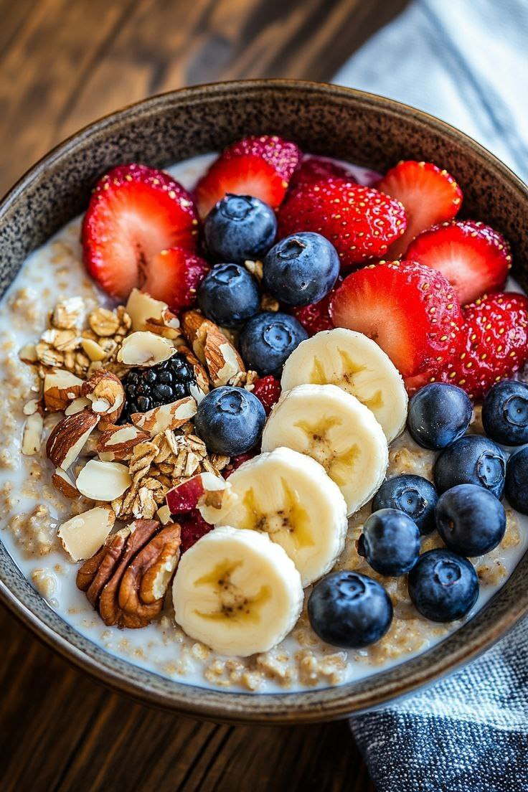

Recipe List
Breakfast List
Oatmeal with Fruits and Nuts

Oatmeal with fruit and nuts is a wholesome and nutritious breakfast made from cooked oats topped with fresh or dried fruits and a variety of nuts. It's rich in fiber, vitamins, healthy fats, and antioxidants, providing long-lasting energy and supporting overall health. This delicious combination is perfect for a hearty, satisfying start to the day.
Click here for more detailsBoiled Eggs with Avocado on Whole Grain Bread
Boiled eggs with avocado on whole grain bread is a healthy and balanced meal, packed with protein, fiber, and healthy fats. The creamy avocado pairs perfectly with the rich flavor of eggs, while the whole grain bread adds a hearty, nutritious base—making it an ideal choice for a filling breakfast or light lunch.
Click here for more detailsEnergizing Green Smoothie (with Banana and Spinach)
An Energizing Green Smoothie with banana and spinach is a refreshing and nutrient-packed drink that boosts energy and supports overall wellness. The banana adds natural sweetness and creaminess, while spinach provides essential vitamins and minerals—making it a perfect quick and healthy start to your day.
Click here for more detailsBeverages List
Lemon Ginger Water
Lemon ginger water is a soothing and invigorating drink made by infusing fresh lemon juice and ginger in warm or cold water. It's known for its detoxifying properties, aiding digestion, boosting immunity, and providing a refreshing start to the day.
More detailsGreen Tea with Mint
Green tea with mint is a light, refreshing beverage that combines the antioxidant power of green tea with the cooling, soothing flavor of mint. It's perfect for calming the mind, aiding digestion, and providing a gentle energy boost throughout the day.
More detailsStrawberry Almond Smoothie
A strawberry almond smoothie is a creamy, delicious blend of fresh strawberries and almonds or almond milk, rich in vitamins, antioxidants, and healthy fats. It's a perfect nutritious treat for a refreshing snack or a quick, energizing breakfast.
More detailsSnacks List
Hummus with Raw Veggies
Hummus with raw veggies is a wholesome, protein-rich snack that pairs creamy, flavorful chickpea dip with crisp, fresh vegetables. It's a nutritious and satisfying option, perfect for boosting energy and supporting a healthy lifestyle.
More detailsGreek Yogurt with Nuts and Honey

Greek yogurt with nuts and honey is a rich, creamy snack that combines the protein and probiotics of yogurt with the crunch of nuts and the natural sweetness of honey. It's a delicious and nourishing option for breakfast or a midday energy boost.
More detailsApple with Natural Peanut Butter

Apple with natural peanut butter is a simple, tasty snack that balances sweet and savory flavors. Packed with fiber, protein, and healthy fats, it’s a satisfying and energizing option for any time of the day.
More detailsFirst Page